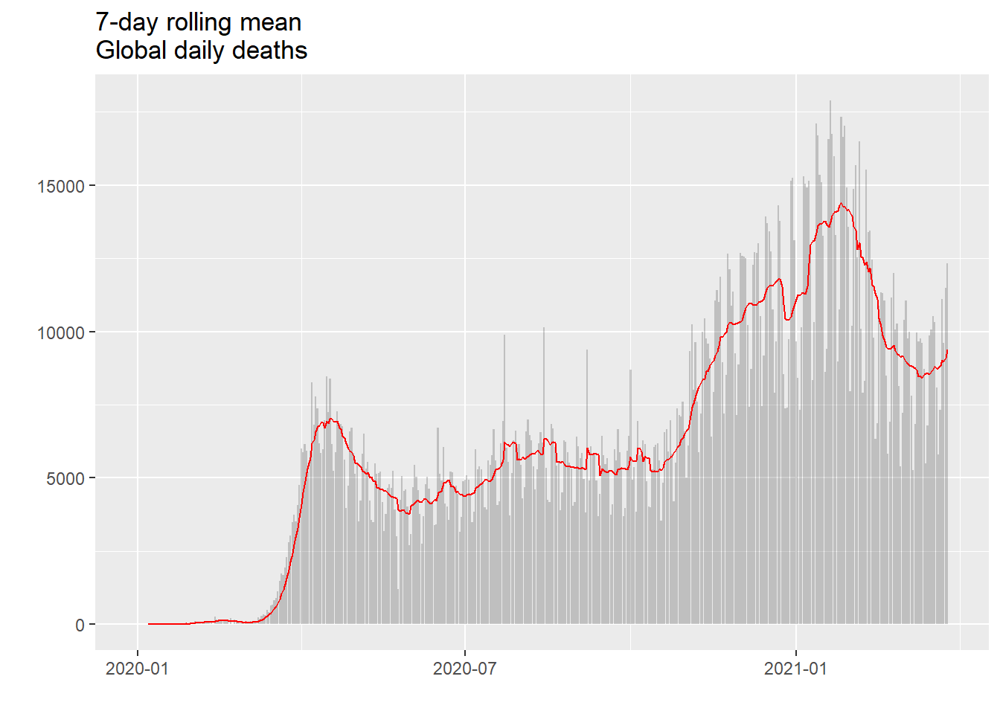
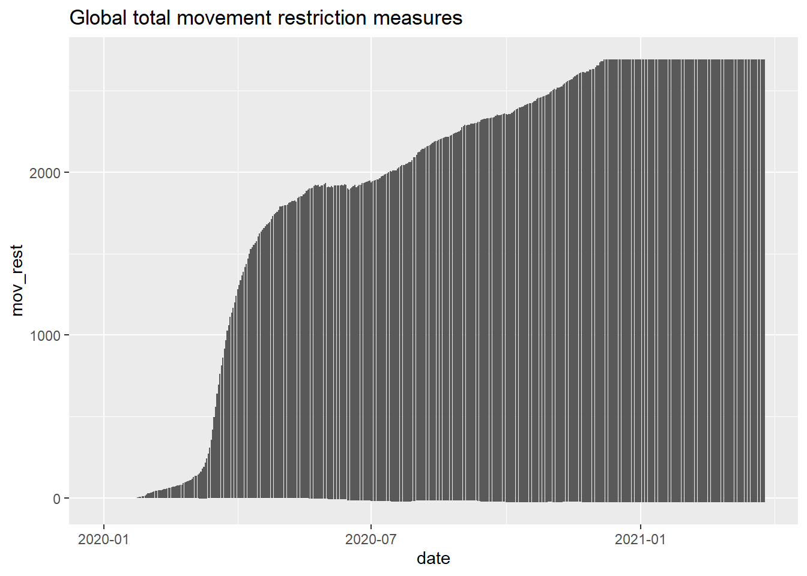

library(tidyverse)
library(tidycovid19)
library(zoo)
library(knitr)
library(kableExtra)
library(naniar)Let’s do some feature engineering and look at the data structure:
df <- download_merged_data(cached = TRUE, silent = TRUE) %>%
group_by(country) %>%
mutate(
# New daily confirmed cases
new_confirmed = confirmed - lag(confirmed),
# New daily confirmed cases per capita
new_confirmed_pc = new_confirmed / population,
# Cum confirmed cases per capita
confirmed_pc = confirmed / population,
# New daily deaths
new_deaths = deaths - lag(deaths),
# New daily deaths per capita
new_deaths_pc = new_deaths / population,
# Cum deaths per capita
deaths_pc = deaths / population,
# 7 Day moving averages for confirmed, deaths, and per capita
ave_7d_new_confirmed = rollmean(new_confirmed, 7, na.pad=TRUE, align="right"),
ave_7d_new_deaths = rollmean(new_deaths, 7, na.pad=TRUE, align="right"),
ave_7d_new_confirmed_pc = rollmean(new_confirmed_pc, 7, na.pad=TRUE, align="right"),
ave_7d_new_deaths_pc = rollmean(new_deaths_pc, 7, na.pad=TRUE, align="right")
) %>%
ungroup()
glimpse(df, width = 100)## Rows: 89,426
## Columns: 50
## $ iso3c <chr> "ABW", "ABW", "ABW", "ABW", "ABW", "ABW", "ABW", "ABW", "ABW", "AB~
## $ country <chr> "Aruba", "Aruba", "Aruba", "Aruba", "Aruba", "Aruba", "Aruba", "Ar~
## $ date <date> 2020-03-13, 2020-03-14, 2020-03-15, 2020-03-16, 2020-03-17, 2020-~
## $ confirmed <dbl> NA, NA, NA, NA, NA, NA, NA, NA, NA, NA, NA, NA, NA, NA, NA, NA, NA~
## $ deaths <dbl> NA, NA, NA, NA, NA, NA, NA, NA, NA, NA, NA, NA, NA, NA, NA, NA, NA~
## $ recovered <dbl> NA, NA, NA, NA, NA, NA, NA, NA, NA, NA, NA, NA, NA, NA, NA, NA, NA~
## $ ecdc_cases <dbl> 2, 2, 2, 2, 2, 2, 2, 4, 4, 4, 4, 12, 17, 19, 28, 28, 28, 50, 50, 5~
## $ ecdc_deaths <dbl> 0, 0, 0, 0, 0, 0, 0, 0, 0, 0, 0, 0, 0, 0, 0, 0, 0, 0, 0, 0, 0, 0, ~
## $ total_tests <dbl> NA, NA, NA, NA, NA, NA, NA, NA, NA, NA, NA, NA, NA, NA, NA, NA, NA~
## $ tests_units <chr> NA, NA, NA, NA, NA, NA, NA, NA, NA, NA, NA, NA, NA, NA, NA, NA, NA~
## $ positive_rate <dbl> NA, NA, NA, NA, NA, NA, NA, NA, NA, NA, NA, NA, NA, NA, NA, NA, NA~
## $ hosp_patients <dbl> NA, NA, NA, NA, NA, NA, NA, NA, NA, NA, NA, NA, NA, NA, NA, NA, NA~
## $ icu_patients <dbl> NA, NA, NA, NA, NA, NA, NA, NA, NA, NA, NA, NA, NA, NA, NA, NA, NA~
## $ total_vaccinations <dbl> NA, NA, NA, NA, NA, NA, NA, NA, NA, NA, NA, NA, NA, NA, NA, NA, NA~
## $ soc_dist <dbl> NA, NA, NA, NA, NA, NA, NA, NA, NA, NA, NA, NA, NA, NA, NA, NA, NA~
## $ mov_rest <dbl> NA, NA, NA, NA, NA, NA, NA, NA, NA, NA, NA, NA, NA, NA, NA, NA, NA~
## $ pub_health <dbl> NA, NA, NA, NA, NA, NA, NA, NA, NA, NA, NA, NA, NA, NA, NA, NA, NA~
## $ gov_soc_econ <dbl> NA, NA, NA, NA, NA, NA, NA, NA, NA, NA, NA, NA, NA, NA, NA, NA, NA~
## $ lockdown <dbl> NA, NA, NA, NA, NA, NA, NA, NA, NA, NA, NA, NA, NA, NA, NA, NA, NA~
## $ apple_mtr_driving <dbl> NA, NA, NA, NA, NA, NA, NA, NA, NA, NA, NA, NA, NA, NA, NA, NA, NA~
## $ apple_mtr_walking <dbl> NA, NA, NA, NA, NA, NA, NA, NA, NA, NA, NA, NA, NA, NA, NA, NA, NA~
## $ apple_mtr_transit <dbl> NA, NA, NA, NA, NA, NA, NA, NA, NA, NA, NA, NA, NA, NA, NA, NA, NA~
## $ gcmr_place_id <chr> "ChIJ23da4s84hY4RL4yBiT6KavE", "ChIJ23da4s84hY4RL4yBiT6KavE", "ChI~
## $ gcmr_retail_recreation <dbl> -10, -23, -28, -28, -38, -65, -52, -53, -62, -70, -53, -55, -57, -~
## $ gcmr_grocery_pharmacy <dbl> 40, 15, -13, 1, 8, -59, -5, -7, -19, -36, -19, -21, -20, -15, -3, ~
## $ gcmr_parks <dbl> -4, -7, -6, -5, -18, -24, -41, -41, -52, -52, -48, -49, -56, -54, ~
## $ gcmr_transit_stations <dbl> -5, -19, -18, -18, -27, -49, -40, -45, -54, -62, -60, -57, -60, -6~
## $ gcmr_workplaces <dbl> 3, -3, -5, -21, -29, -74, -40, -41, -40, -46, -48, -51, -53, -55, ~
## $ gcmr_residential <dbl> 1, 7, 6, 12, 15, 32, 21, 22, 21, NA, 24, 26, 27, 27, 25, 20, NA, 3~
## $ gtrends_score <dbl> NA, NA, NA, NA, NA, NA, NA, NA, NA, NA, NA, NA, NA, NA, NA, NA, NA~
## $ gtrends_country_score <int> NA, NA, NA, NA, NA, NA, NA, NA, NA, NA, NA, NA, NA, NA, NA, NA, NA~
## $ region <chr> "Latin America & Caribbean ", "Latin America & Caribbean ", "Latin~
## $ income <chr> "High income", "High income", "High income", "High income", "High ~
## $ population <dbl> 106314, 106314, 106314, 106314, 106314, 106314, 106314, 106314, 10~
## $ land_area_skm <dbl> 180, 180, 180, 180, 180, 180, 180, 180, 180, 180, 180, 180, 180, 1~
## $ pop_density <dbl> 588.0278, 588.0278, 588.0278, 588.0278, 588.0278, 588.0278, 588.02~
## $ pop_largest_city <dbl> NA, NA, NA, NA, NA, NA, NA, NA, NA, NA, NA, NA, NA, NA, NA, NA, NA~
## $ life_expectancy <dbl> 76.152, 76.152, 76.152, 76.152, 76.152, 76.152, 76.152, 76.152, 76~
## $ gdp_capita <dbl> 26630.21, 26630.21, 26630.21, 26630.21, 26630.21, 26630.21, 26630.~
## $ timestamp <dttm> 2021-03-28 04:09:44, 2021-03-28 04:09:44, 2021-03-28 04:09:44, 20~
## $ new_confirmed <dbl> NA, NA, NA, NA, NA, NA, NA, NA, NA, NA, NA, NA, NA, NA, NA, NA, NA~
## $ new_confirmed_pc <dbl> NA, NA, NA, NA, NA, NA, NA, NA, NA, NA, NA, NA, NA, NA, NA, NA, NA~
## $ confirmed_pc <dbl> NA, NA, NA, NA, NA, NA, NA, NA, NA, NA, NA, NA, NA, NA, NA, NA, NA~
## $ new_deaths <dbl> NA, NA, NA, NA, NA, NA, NA, NA, NA, NA, NA, NA, NA, NA, NA, NA, NA~
## $ new_deaths_pc <dbl> NA, NA, NA, NA, NA, NA, NA, NA, NA, NA, NA, NA, NA, NA, NA, NA, NA~
## $ deaths_pc <dbl> NA, NA, NA, NA, NA, NA, NA, NA, NA, NA, NA, NA, NA, NA, NA, NA, NA~
## $ ave_7d_new_confirmed <dbl> NA, NA, NA, NA, NA, NA, NA, NA, NA, NA, NA, NA, NA, NA, NA, NA, NA~
## $ ave_7d_new_deaths <dbl> NA, NA, NA, NA, NA, NA, NA, NA, NA, NA, NA, NA, NA, NA, NA, NA, NA~
## $ ave_7d_new_confirmed_pc <dbl> NA, NA, NA, NA, NA, NA, NA, NA, NA, NA, NA, NA, NA, NA, NA, NA, NA~
## $ ave_7d_new_deaths_pc <dbl> NA, NA, NA, NA, NA, NA, NA, NA, NA, NA, NA, NA, NA, NA, NA, NA, NA~The package provides some definitions for the variables:
var_definitions <- tidycovid19_variable_definitions %>%
select(var_name, var_def)
kable(var_definitions) %>%
kableExtra::kable_styling() %>%
kableExtra::scroll_box(width = "100%", height = "300px")| var_name | var_def |
|---|---|
| iso3c | ISO3c country code as defined by ISO 3166-1 alpha-3 |
| country | Country name |
| date | Calendar date |
| confirmed | Confirmed Covid-19 cases as reported by JHU CSSE (accumulated) |
| deaths | Covid-19-related deaths as reported by JHU CSSE (accumulated) |
| recovered | Covid-19 recoveries as reported by JHU CSSE (accumulated) |
| ecdc_cases | Covid-19 cases as reported by ECDC (accumulated, weekly post 2020-12-14) |
| ecdc_deaths | Covid-19-related deaths as reported by ECDC (accumulated, weekly post 2020-12-14) |
| total_tests | Accumulated test counts as reported by Our World in Data |
| tests_units | Definition of what constitutes a ‘test’ |
| positive_rate | The share of COVID-19 tests that are positive, given as a rolling 7-day average |
| hosp_patients | Number of COVID-19 patients in hospital on a given day |
| icu_patients | Number of COVID-19 patients in intensive care units (ICUs) on a given day |
| total_vaccinations | Total number of COVID-19 vaccination doses administered |
| soc_dist | Number of social distancing measures reported up to date by ACAPS, net of lifted restrictions |
| mov_rest | Number of movement restrictions reported up to date by ACAPS, net of lifted restrictions |
| pub_health | Number of public health measures reported up to date by ACAPS, net of lifted restrictions |
| gov_soc_econ | Number of social and economic measures reported up to date by ACAPS, net of lifted restrictions |
| lockdown | Number of lockdown measures reported up to date by ACAPS, net of lifted restrictions |
| apple_mtr_driving | Apple Maps usage for driving directions, as percentage*100 relative to the baseline of Jan 13, 2020 |
| apple_mtr_walking | Apple Maps usage for walking directions, as percentage*100 relative to the baseline of Jan 13, 2020 |
| apple_mtr_transit | Apple Maps usage for public transit directions, as percentage*100 relative to the baseline of Jan 13, 2020 |
| gcmr_retail_recreation | Google Community Mobility Reports data for the frequency that people visit retail and recreation places expressed as a percentage*100 change relative to the baseline period Jan 3 - Feb 6, 2020 |
| gcmr_grocery_pharmacy | Google Community Mobility Reports data for the frequency that people visit grocery stores and pharmacies expressed as a percentage*100 change relative to the baseline period Jan 3 - Feb 6, 2020 |
| gcmr_parks | Google Community Mobility Reports data for the frequency that people visit parks expressed as a percentage*100 change relative to the baseline period Jan 3 - Feb 6, 2020 |
| gcmr_transit_stations | Google Community Mobility Reports data for the frequency that people visit transit stations expressed as a percentage*100 change relative to the baseline period Jan 3 - Feb 6, 2020 |
| gcmr_workplaces | Google Community Mobility Reports data for the frequency that people visit workplaces expressed as a percentage*100 change relative to the baseline period Jan 3 - Feb 6, 2020 |
| gcmr_residential | Google Community Mobility Reports data for the frequency that people visit residential places expressed as a percentage*100 change relative to the baseline period Jan 3 - Feb 6, 2020 |
| gtrends_score | Google search volume for the term ‘coronavirus’, relative across time with the country maximum scaled to 100 |
| gtrends_country_score | Country-level Google search volume for the term ‘coronavirus’ over a period starting Jan 1, 2020, relative across countries with the country having the highest search volume scaled to 100 (time-stable) |
| region | Country region as classified by the World Bank (time-stable) |
| income | Country income group as classified by the World Bank (time-stable) |
| population | Country population as reported by the World Bank (original identifier ‘SP.POP.TOTL’, time-stable) |
| land_area_skm | Country land mass in square kilometers as reported by the World Bank (original identifier ‘AG.LND.TOTL.K2’, time-stable) |
| pop_density | Country population density as reported by the World Bank (original identifier ‘EN.POP.DNST’, time-stable) |
| pop_largest_city | Population in the largest metropolian area of the country as reported by the World Bank (original identifier ‘EN.URB.LCTY’, time-stable) |
| life_expectancy | Average life expectancy at birth of country citizens in years as reported by the World Bank (original identifier ‘SP.DYN.LE00.IN’, time-stable) |
| gdp_capita | Country gross domestic product per capita, measured in 2010 US-$ as reported by the World Bank (original identifier ‘NY.GDP.PCAP.KD’, time-stable) |
| timestamp | Date and time where data has been collected from authoritative sources |
vis_miss(df[,1:10])vis_miss(df[,11:20])vis_miss(df[,21:30])vis_miss(df[,31:40])vis_miss(df[,41:50])
We can see that some variables have a substantial amount of values missing. When comparing countries, we should check the specific availability of the variable for the specific country.
The package hast variables that show numbers of reported measures. Some variables of interest that have only 11.47% missing data are the following:
soc_distmov_restpub_healthgov_soc_econlockdownAlso of interest would be a time series of total_tests, total_vaccinations, hosp_patients, and icu_patients. Due to the large number of NA’s, an interpretation might not be very meaningful.
Further analysis per country might provide better data.
Here a new global_df is generated for more control over the rolling mean and missing values.
global_df <- df %>%
group_by(date) %>%
summarize(
global_confirmed = sum(confirmed, na.rm = TRUE),
global_deaths = sum(deaths, na.rm = TRUE),
global_soc_dist = sum(soc_dist, na.rm = TRUE),
global_mov_rest = sum(mov_rest, na.rm = TRUE),
global_lockdown = sum(lockdown, na.rm = TRUE)
) %>%
mutate(
global_new_confirmed = global_confirmed - lag(global_confirmed),
global_new_deaths = global_deaths - lag(global_deaths),
global_ave_7d_new_deaths = rollmean(global_new_deaths, 7, na.pad=TRUE, align="right"),
global_ave_7d_new_confirmed = rollmean(global_new_confirmed, 7, na.pad=TRUE, align="right")
)
glimpse(global_df)## Rows: 452
## Columns: 10
## $ date <date> 2019-12-31, 2020-01-01, 2020-01-02, 2020-~
## $ global_confirmed <dbl> 0, 0, 0, 0, 0, 0, 0, 0, 0, 0, 0, 0, 0, 0, ~
## $ global_deaths <dbl> 0, 0, 0, 0, 0, 0, 0, 0, 0, 0, 0, 0, 0, 0, ~
## $ global_soc_dist <dbl> 0, 0, 0, 0, 0, 0, 0, 0, 0, 0, 0, 0, 0, 0, ~
## $ global_mov_rest <dbl> 0, 0, 0, 0, 0, 0, 0, 0, 0, 0, 0, 0, 0, 0, ~
## $ global_lockdown <dbl> 0, 0, 0, 0, 0, 0, 0, 0, 0, 0, 0, 0, 0, 0, ~
## $ global_new_confirmed <dbl> NA, 0, 0, 0, 0, 0, 0, 0, 0, 0, 0, 0, 0, 0,~
## $ global_new_deaths <dbl> NA, 0, 0, 0, 0, 0, 0, 0, 0, 0, 0, 0, 0, 0,~
## $ global_ave_7d_new_deaths <dbl> NA, NA, NA, NA, NA, NA, NA, 0.000000, 0.00~
## $ global_ave_7d_new_confirmed <dbl> NA, NA, NA, NA, NA, NA, NA, 0.00000, 0.000~ggplot(global_df, aes(x = date)) +
geom_col(aes(y = global_confirmed), alpha = 0.3) +
labs(title = "Global total confirmed cases", x = "", y = "")ggplot(global_df, aes(x = date)) +
geom_col(aes(y = global_new_confirmed), alpha = 0.3) +
geom_line(aes(y = global_ave_7d_new_confirmed), color = "red") +
labs(title = "7-day rolling mean\nGlobal daily cases", x = "", y = "") +
ylim(0,800000)## Warning: Removed 4 rows containing missing values (position_stack).## Warning: Removed 7 row(s) containing missing values (geom_path).ggplot(global_df, aes(x = date)) +
geom_col(aes(y = global_deaths), alpha = 0.3) +
labs(title = "Global total deaths", x = "", y = "")ggplot(global_df, aes(x = date)) +
geom_col(aes(y = global_new_deaths), alpha = 0.3) +
geom_line(aes(y = global_ave_7d_new_deaths), color = "red") +
labs(title = "7-day rolling mean\nGlobal daily deaths", x = "", y = "")## Warning: Removed 1 rows containing missing values (position_stack).## Warning: Removed 7 row(s) containing missing values (geom_path).
# Number of tests, vaccinations, and patients
ggplot(df, aes(x = date, y = total_tests), group = date) +
geom_col() +
labs(title = "Global total tests")## Warning: Removed 54451 rows containing missing values (position_stack).ggplot(df, aes(x = date, y = total_vaccinations), group = date) +
geom_col() +
labs(title = "Global total vaccinations")## Warning: Removed 84649 rows containing missing values (position_stack).ggplot(df, aes(x = date, y = hosp_patients), group = date) +
geom_col() +
labs(title = "Global total hospital patients")## Warning: Removed 79676 rows containing missing values (position_stack).ggplot(df, aes(x = date, y = icu_patients), group = date) +
geom_col() +
labs(title = "Global total icu patients")## Warning: Removed 81287 rows containing missing values (position_stack).# Number of measures reported
ggplot(global_df, aes(x = date, y = global_soc_dist)) +
geom_col() +
labs(title = "Global total social distancing measures")ggplot(df, aes(x = date, y = mov_rest), group = date) +
geom_col() +
labs(title = "Global total movement restriction measures")## Warning: Removed 10257 rows containing missing values (position_stack).
ggplot(df, aes(x = date, y = pub_health), group = date) +
geom_col() +
labs(title = "Global total public health measures")## Warning: Removed 10257 rows containing missing values (position_stack).ggplot(global_df, aes(x = date, y = global_lockdown), group = date) +
geom_col() +
labs(title = "Global total lockdown measures")